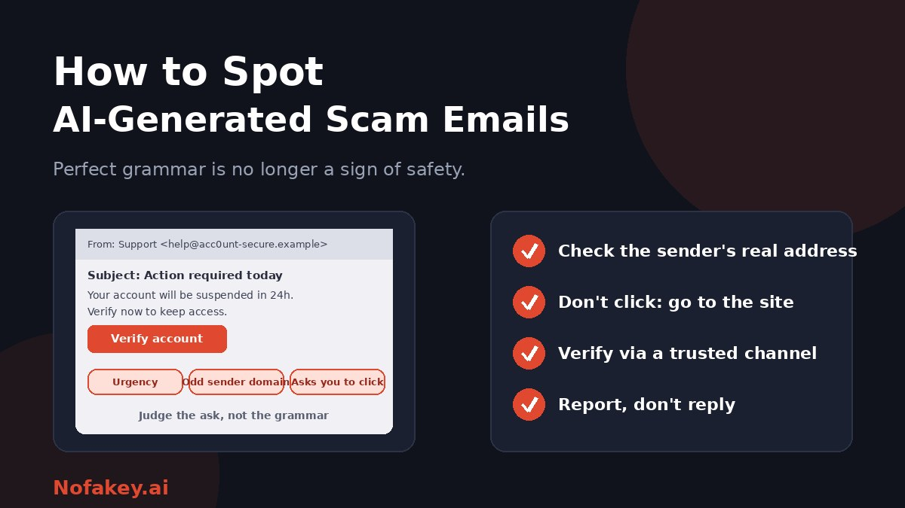

For years, the advice was simple: scam emails are full of typos, so watch for bad grammar. That advice no longer works. AI tools can write clean, confident, well-formatted messages in any tone, and even personalise them using details found online. A flawless email can still be a trap, and a clumsy one can be genuine. This guide shows what to check instead, and what to do if you have already clicked.
What AI changed about scam emails
- Polish. Spelling mistakes and awkward phrasing, once the easiest tells, are easy to remove.
- Tone. Messages can mimic a bank, a delivery firm, a manager or a colleague convincingly.
- Personalisation. Details from public profiles, data leaks or earlier emails can be woven in so the message feels relevant.
- Scale and variety. Many different versions can be produced quickly, so each looks unique.
- Languages. Fluent scams are available in more languages, reaching people who rarely saw them before.
What has not changed is the goal: to make you hand over money, a login, a code or access. That is where to focus.
What to look for instead of grammar
| Check | What to look for |
|---|---|
| The ask | Money, gift cards, crypto, a payment change, a login, a one-time code, or a "verification" of your details |
| Urgency and pressure | "Act within 24 hours," account suspension, legal threats, or secrecy ("don't tell anyone") |
| Sender address | A display name that looks right but an address from a different or lookalike domain |
| Links | Buttons or links whose real destination differs from the text, shortened links, or sites that imitate a known brand |
| Attachments | Unexpected invoices, "secure documents," or files you are told to open to proceed |
| Context mismatch | The message does not match how this person or company usually contacts you, or refers to something you did not do |
| Generic or oddly vague wording | "Dear customer," or details that could apply to anyone. A clue only, since personalised scams exist too |
| Reply-to and signature | A reply address that differs from the sender, or contact details that do not check out |
One or two of these are enough to stop and verify. If an email lets you check things independently without clicking anything in it, that is a good sign. If it pushes you to act inside the email, be careful.
A 60-second routine
- Pause. Notice the feeling: fear, urgency, excitement, curiosity. Scams are built to trigger it.
- Ask: what does it want me to do? If it is money, codes, logins or personal data, stop.
- Look at the real sender address, not just the name. On most apps you can tap or hover the name to see it.
- Check links without clicking. Hover or long-press to preview the destination. If it does not clearly match the organisation, do not use it.
- Go to the source yourself. Type the company's website into your browser, or use its official app or a number from a card or statement.
- Confirm with the person, for requests from a boss, colleague or relative, on a different channel such as a call to a saved number.
- Report and delete if it is a scam, or ask your IT or security team if it is work-related.
Realistic examples (made up)
Example 1: The polished "security alert"
- From
- "Account Security" <alerts@secure-login-help.example>
- Subject
- Unusual sign-in detected: confirm now
We noticed a sign-in from a new device. To keep your account safe, please verify your identity within 24 hours: [Verify account]
Why it's a scam: the writing is clean, but the sender domain is not the company's, the deadline adds pressure, and the button leads you to a login page you did not choose.
Example 2: The "quick favour" from your manager
- From
- "Sam (Director)" <sam.director.office@mailbox.example>
- Subject
- Are you at your desk?
I'm in a meeting and need a favour. Can you buy some gift cards for a client? I'll reimburse you today. Keep this between us.
Why it's a scam: a free-mail address, secrecy, and a request for gift cards. Verify on another channel before doing anything.
Example 3: The believable invoice
- From
- "Accounts" <billing@supplier-payments.example>
- Subject
- Updated bank details for invoice 4821
Please note our bank details have changed. Use the new account for this and future payments. Invoice attached.
Why it's a scam: bank-detail changes are a classic fraud. Confirm by calling the supplier on a number you already had, and follow dual-approval rules.
Common AI-assisted email scams
- Account verification and password resets that lead to fake login pages.
- Delivery and parcel notices asking for a small fee or details.
- Subscription and renewal bills, including cancellation lures. See the fake AI subscription cancellation scam.
- "Identity re-verification" requests asking for ID photos. See the fake AI identity reverification scam.
- Fake support and refund messages that push you to a chat or call. See the fake AI customer support chat scam.
- Browser or software "update" alerts. See the fake AI browser extension update scam.
- Payment and agent requests that exploit automation. See the fake AI agent payment scam.
- Boss, colleague and supplier impersonation asking for transfers, gift cards or bank-detail changes.
- Job offers and recruiter messages that ask for fees, documents or personal details early.
Do AI email detectors help?
Some tools claim to flag AI-written emails. They are of limited use for scams. Legitimate emails are often AI-assisted, human-written scams exist, and detectors can be wrong in both directions. Who wrote the email matters less than what it asks you to do and who really sent it. See are AI detectors accurate? Email security filters are useful as one layer, but they do not catch everything.
If you clicked or replied
- Do not enter anything further. Close the page.
- If you entered a password, change it right away from a clean device, and anywhere you reused it. Turn on two-step sign-in.
- If you opened an attachment or installed something, disconnect from the internet, run a full security scan and get help from IT or a professional.
- If you shared card or bank details, contact your bank or card provider straight away.
- If you sent money, contact your bank immediately and ask about stopping or recalling the payment.
- Tell your workplace if it involved a work account, so others can be warned.
- Report it to your email provider, your national fraud or cybercrime reporting service, and the impersonated organisation.
- Do not feel embarrassed. Quick reports limit the damage.
For businesses and teams
- Use multi-factor authentication or passkeys so a stolen password is not enough.
- Require dual approval and call-back for payments, new payees and bank-detail changes. See brand protection against deepfake impersonation for controls that also work against email fraud.
- Authenticate your own domain with standard email protections, and ask your IT provider to check they are set up properly.
- Make reporting easy, with a clear button or address, and thank people who report.
- Train with realistic examples, not typo hunts, and refresh regularly.
- Limit what is public about staff roles, travel and approval processes that scammers can use.
- Back up important data and test restores.
When a message seems off and you cannot tell why, paste it into our free checker for a quick first read.
Conclusion
AI has removed the clumsy typos, but not the pattern. Scam emails still push you to act fast, trust a sender and hand something over. Slow down, look at the real sender and the ask, never verify through the email itself, and use trusted channels you find on your own. Businesses should add controls around money and access so no single email can cause harm. Find more guides on the Nofakey.ai blog.
Frequently asked questions
Can you still spot a scam email by bad grammar?
Not reliably. AI can produce clean, fluent emails, so perfect spelling proves nothing. Judge the message by what it asks you to do and whether you can verify it through an official channel.
What are the signs of an AI-generated scam email?
Urgency or threats, a request for money, codes or logins, an unexpected link or attachment, a sender address that does not match the organisation, and a message that does not fit your usual contact with that sender.
Can AI detectors tell if an email was written by AI?
Not dependably, and it would not matter much: plenty of legitimate emails are AI-assisted, and scams can be human-written. Focus on the request and the sender, not who wrote it.
What should I do if I clicked a link in a suspicious email?
Do not enter details. If you did, change that password at once from a clean device, turn on two-step sign-in, contact your bank if money or card data is involved, run a security scan, and report the email.
How can businesses protect staff from AI-generated phishing?
Use multi-factor authentication or passkeys, dual approval and call-back for payments, email authentication on your own domain, an easy way to report suspicious messages, and regular practical training that does not rely on spotting typos.
Got a suspicious email, link or message to check?
Run it through the checker